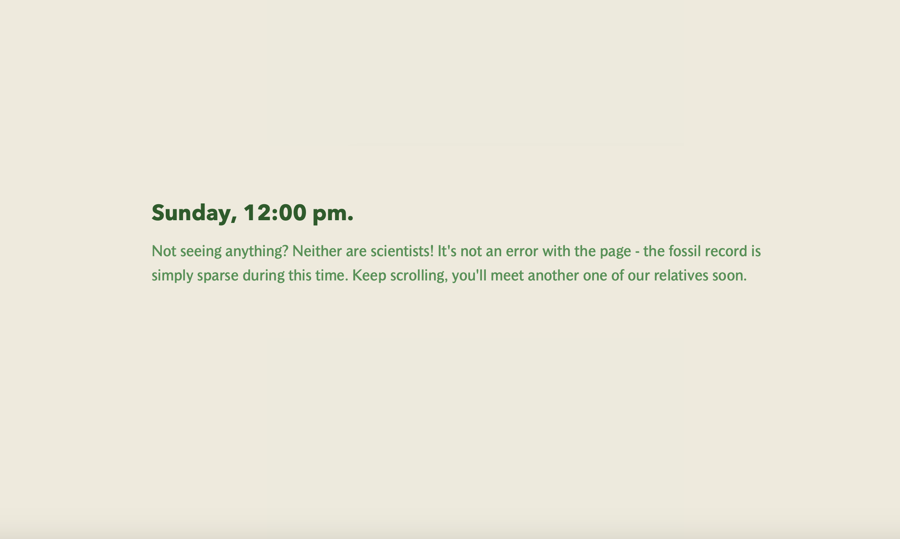
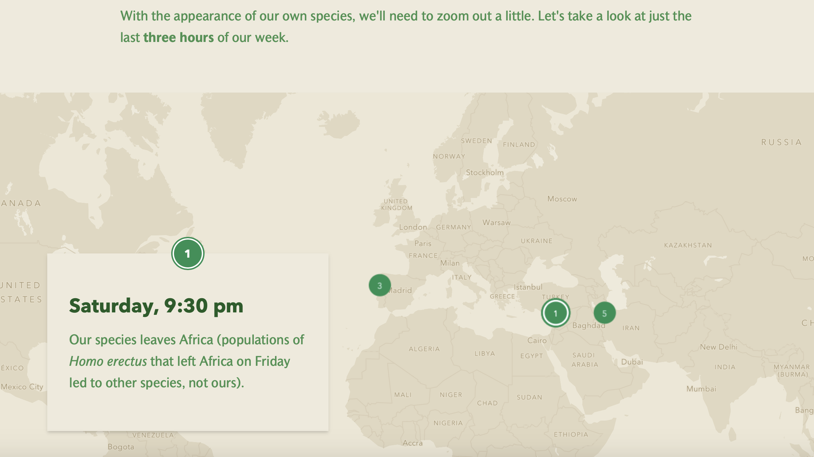
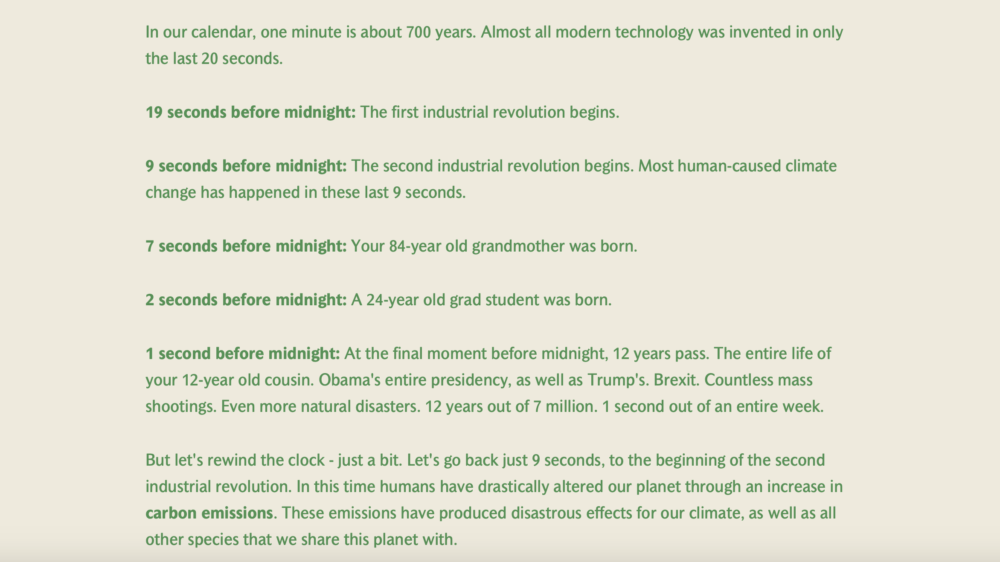
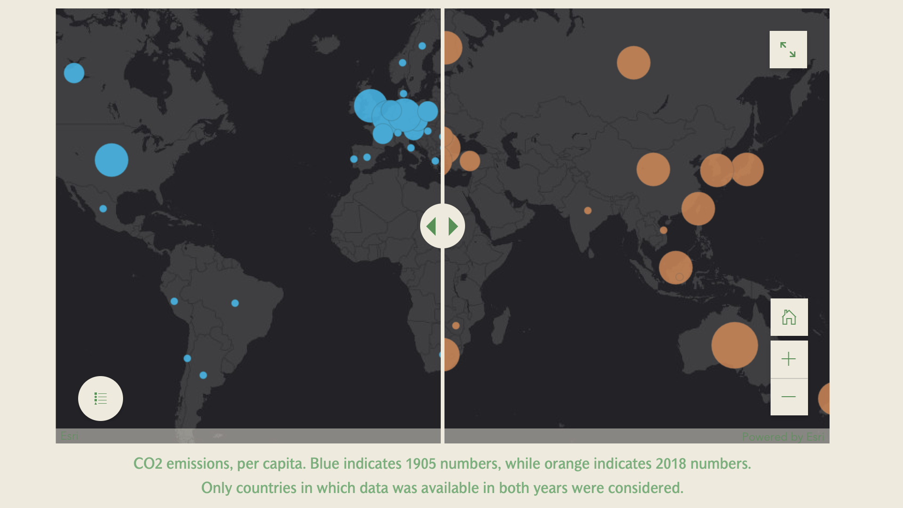
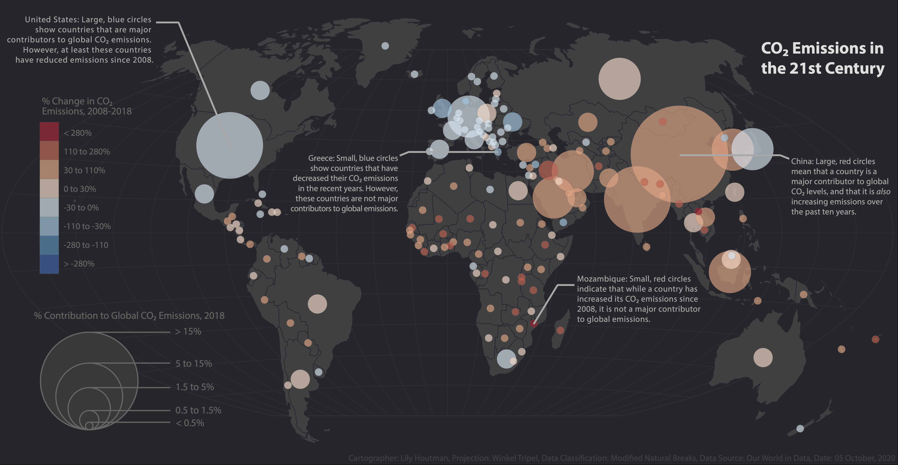
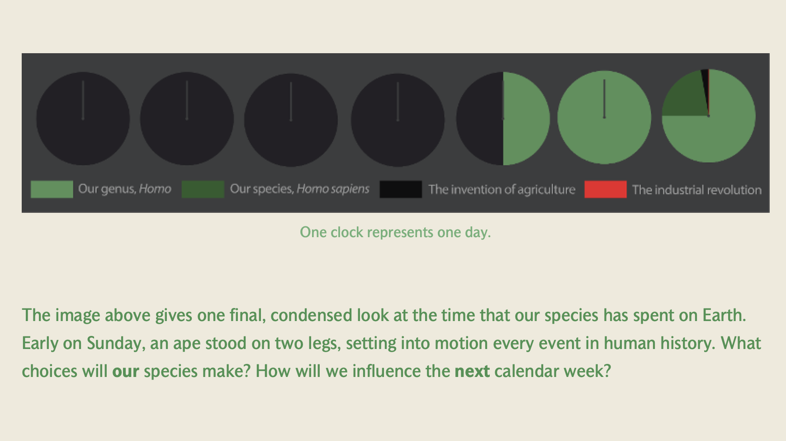

Human Evolution in a Calendar Week
In this visualization, I use data from Minneapolis from 2000 to 2018 to see if there are trends between gentrified areas and the emergence of veganism in the city.
Gentrificatioin
Although gentrification has been studied extensively from multiple disciplinary perspectives (mpls), it is a phenomena that does not have a concrete definition or outcome. It is commonly connotation as a negative interaction; however, even low-income households that worry about gentrification are frequently in favor of neighborhood improvement, but show active concern of displacement(mpls). Because of the lack of a concrete definition, a number of different measures of gentrification have been used by researchers in differing formats. The three factors that were used to gauge gentrification in this case were income, percent of people with some college education, and percent of owner versus renter occupied spaces per block area in Minneapolis. I calculated principal component analysis scores of these three factors and added them to create one index score. On the map, this index score is referred to as “score of advantages” due to the recent discussions considering that gentrification itself is hard to score and has many changing factors.
Veganism
In recent years, vegan diets have been continuously portrayed as elite and expensive; while also growing popularity in primarily white privileged areas. Specifically, vegan food often comes at a higher price than other foods and is marketed towards a more middle class crowd, with more advantages. This therefore correlated to the score of advantages that I have calculated, and I wanted to watch the trends. For this analysis, I defined vegan restaurants as ones that showed up in the app “Happy Cow''. I choose to do this due to its high accessibility for people looking for vegan restaurants along with its popularity as the most used app among people who eat vegan, suggesting its accuracy according to the community.
The Data
Astate where you got the
Keep scrolling to read more about lesbian bars, or click through the map to experience their decline over the last decade.

I began this map by equating each day in a calendar week to one million years of human evolution. Design-wise, I used light greens and browns to emphasize the natural landscape of Africa that our ancestors evolved in. I used a simple basemap to locate famous fossils, with pictures of the fossils included.

I dated each event in human evolution not only to a day, but a time of day. However, for the first few million years, there are not many fossils. I included blank space during these early times so each day takes the same amount of time to scroll through.

By Saturday, events in human history get more complex and rapid. I placed these major events in one map, at a small scale. Then, when the user scrolls to the next event, the jump between a close up of the Middle East to a close up of Australia feels especially rapid, echoing the speed of human dispersal.

I ended the section on evolution with the last few 100 years, hoping to connect the human story to the individual life of each viewer.

After connecting the user to their own life, I rapidly shifted the tone of the map. I used dark blacks and greys to show the impact of CO2 on our planet. This map is interactive, so the user can see the stark difference between CO2 in the early 1900s compared to present day.

I used the same tone for a second modern map, but this one is slightly more optimistic. Here, I presented very recent declines (for many, but not all countries) in CO2 use. I argued that only through continued action of a similar level can we preserve our planet for future humans.

I ended this story with a call to imagine how we will impact our planet for its next calendar week. I included a condensed timeline of the same information that I previously explained. I intentionally followed the same color scheme as before, with the red line for the industrial revolution as barely visable, to illustrate that small amount of time that our planet has been in this industrial age.